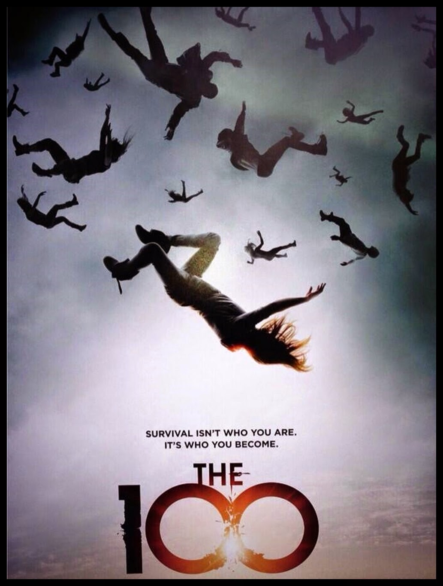

THE 100 (pronounced The Hundred) is an American post-apocalyptic science fiction drama television series that premiered on March 19, 2014, on The CW and ended on September 30, 2020. The series, developed by Jason Rothenberg, is loosely based on the novel series of the same name by Kass Morgan.
원헌드레드는 포스트-아포칼립스 SF 장르의 미국드라마이며 2014년 5월 19일부터 2020년 9월 30일까지 CW 채널에서 방영하였다. '카스 모건'의 동명 소설을 원작으로 한다.